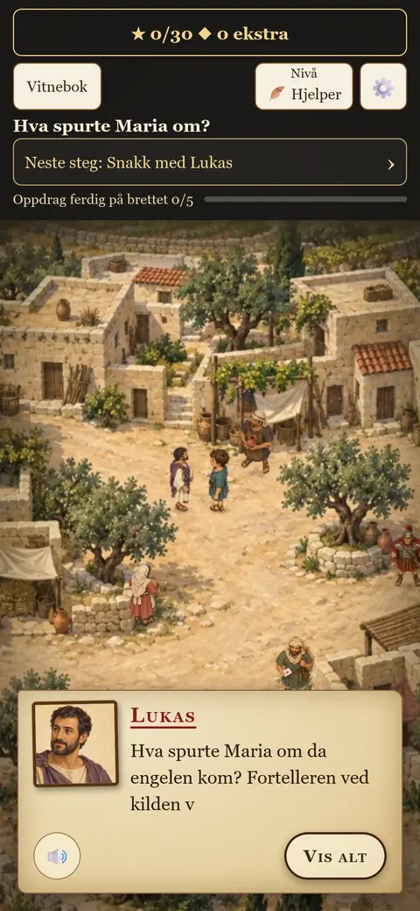
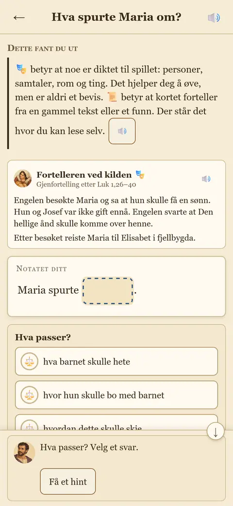
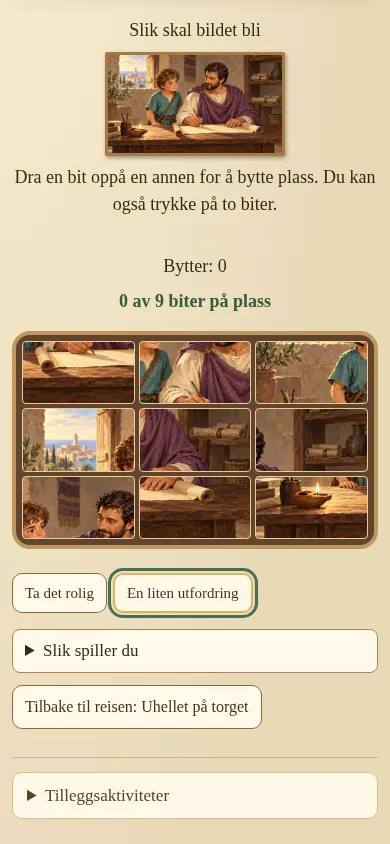

1 · Møt noen
Hør hva de forteller
Du får ett oppdrag om gangen. Neste steg hjelper deg videre.
Reisen med Lukas
Kalenderen starter tirsdag 1. desember. Luke 1 er gratis og kan prøves nå.
Kristen adventskalender · julekalender for barn · 1.–24. desember
En kristen adventskalender og julekalender for barn, bygd på juleevangeliet i Lukas. Barnet blir lærlingen til legen Lukas, snakker med folk som var der, og løser én liten sak om dagen, 5–15 minutter.
Fra 8 år, med et detektivnivå som gir utfordring helt opp i tenårene. Like gøy for voksne som spiller med.
Denne iPaden eller iPhonen kan ikke spille Reisen med Lukas (krever iOS 16.4 eller nyere). Kjøp bare hvis barnet skal spille på en annen enhet.
Luke 1 er gratis, uten konto. Koden låser opp luke 2–24: 250 kr for én, eller 500 kr for hele husstanden. Betal med Vipps, og koden kommer med en gang. Engangskjøp, ingen abonnement.
Til barnebarn eller fadderbarn? Kjøp som gave, med gavekort som PDF.

1 · Møt noen
Du får ett oppdrag om gangen. Neste steg hjelper deg videre.

2 · Undersøk spor
Sporene følger deg inn i boka. Du trenger ikke huske alt.

3 · Lek litt til
Spillkista samler lekene du finner. Prøv igjen når du vil.


Luke 1 er en hel luke, akkurat som de andre 23. Prøv den gratis.
Denne iPaden eller iPhonen kan ikke spille Reisen med Lukas (krever iOS 16.4 eller nyere). Kjøp bare hvis barnet skal spille på en annen enhet.
Aktivitetsark til utskrift for hver dag, gratis for alle.
Gratis
250 kr
Under 11 kr per luke
500 kr
Under 22 kr per luke for hele huset
Samme pris som to personlige koder. Alle i huset kan spille.
Betal med Vipps eller bankoverføring. Dere får koden med en gang, og den kommer også på e-post.
Prisen per luke er regnet for de 23 lukene koden låser opp; luke 1 er gratis. Lukene åpner på sin dag i desember, og etter julaften er alle åpne. Spillet er åpent minst til og med 31. januar 2027. Angrerett og refusjon: se kjøpsvilkårene. Hva vi lagrer ved kjøp, står i personvernerklæringen.
En julegave som varer i 24 dager. Passer fra 8 år og opp i tenårene. Koden står på gavekortet, og QR-koden på kortet låser opp spillet på enheten barnet spiller på. Kortet kan skrives ut eller sendes som PDF.
Gi gavekortet første søndag i advent, 29. november. Da er alt klart når kalenderen starter tirsdag 1. desember.
Etter kjøpet laster du ned et gavekort som PDF med koden ferdig påtrykt, og med navnet til den som skal få det. Bor barnet et annet sted, sender du PDF-en til foreldrene.
Kjøp som gaveGavekort med personlig kode til 250 kr kan også kjøpes i butikken hos Ordet è Ditt, Breigata 12 i Stavanger. Familiekoden kjøpes bare her på nettsiden.
Vi som har laget spillet, tror at Bibelen er sann og til å stole på. Vi vil at barna skal oppdage at mye av det som står der, også har et godt historisk grunnlag: steder, personer og hendelser som andre kilder og funn støtter. Underveis møter de også spørsmål historikerne fortsatt diskuterer. Det hører med når man undersøker noe ærlig, og slike spørsmål trenger ikke å rokke ved tilliten til Bibelen. Målet er barn som er trygge på troen sin, og som vet at den tåler å bli undersøkt.
Dere betaler én gang for koden, og så er det ferdig. Inne i spillet finnes det ingen butikk, ingen mynter å kjøpe og ingen tilbud som dukker opp. Det er ingen konto og ingen innlogging, og framgangen lagres bare på enheten dere spiller på.
«Bestefar, er det som står i Bibelen sant?» Introfilmen viser hvordan reisen begynner: Gutten spør, bestefar svarer, og så får barnet bli med Lukas og undersøke selv. Filmen er frivillig og passer fint å se sammen før luke 1.
En julekalender på nett med kristent innhold, bygd på juleevangeliet i Lukas. Barnet blir lærlingen til legen Lukas og løser én liten sak om dagen, 1.–24. desember, på 5–15 minutter. Fra 8 år og opp i tenårene. Like gøy for voksne. Luke 1 er gratis, og koden koster 250 kr for én eller 500 kr for hele husstanden.
Ja. Luke 1 er åpen for alle, uten konto og uten e-post. Da kan dere prøve spillet før dere bestemmer dere.
Koden låser opp luke 2–24. Lukene åpner på sin dag i desember, og etter julaften er alle åpne. Spillet er åpent minst til og med 31. januar 2027. Det er et engangskjøp: ingen abonnement og ingen kjøp inne i spillet.
Ved midnatt, etter klokka på enheten barnet spiller på.
En personlig kode (250 kr) er for én person. En familiekode (500 kr) er for hele husstanden, altså alle som bor i samme hus, og kan tastes inn på alle enhetene dere har hjemme.
Ja. Etter kjøpet laster du ned gavekortet med koden. Bor barnet et annet sted? Send PDF-en på e-post eller melding til foreldrene. De kan skrive den ut, eller skanne QR-koden rett fra skjermen. Del kortet bare med den som skal ha gaven. Gir du til barn, barnebarn eller noen dere kjenner i flere hjem, trenger hvert hjem sin egen kode.
Enklest: åpne lenka i e-posten, eller skann QR-koden på kvitteringen eller gavekortet, på enheten barnet skal spille på. Vil du skrive koden selv: trykk på tannhjulet ⚙ på startsiden og «Skriv inn kode». Skriv inn koden og trykk «Lås opp».
Betal med Vipps eller bankoverføring. Dere får koden med en gang, og den kommer også på e-post.
Spillet passer fra 8 år og opp i tenårene. Yngre barn kan være med sammen med en voksen eller et eldre søsken, og alle kort kan leses høyt.
Ja. Spillet kjører i nettleseren på telefon, nettbrett og PC, uten at noe må installeres. En ny luke trenger nett første gang den åpnes. Etter det kan den spilles uten nett på samme enhet. På iPhone og iPad trengs iOS 16.4 eller nyere.
Spillet sender ingenting om barnet. Hvor langt barnet har kommet, og svarene i spillet, lagres bare i nettleseren på enheten barnet spiller på. Det er ingen konto, ingen innlogging og ingen statistikk i spillet. Mer står i personvernerklæringen.
Da er lukene fram til og med dagens dato åpne med en gang, og så åpner en ny luke hver dag fram til julaften. Barnet kan ta igjen dagene når det passer.
Ja, men spillet har ingen profiler, så søsken som deler enhet, deler også framgangen. Vil hvert barn ha sin egen reise, kan de bruke hver sin enhet eller nettleser.
Ja. Det er et spill på nett med én luke om dagen, uten godteri. Ingen konto, ingen reklame og ingen kjøp i spillet. Til hver dag finnes også gratis aktivitetsark til utskrift.
Dagens sak tar som regel 5–15 minutter. Etterpå kan barnet utforske småspill.
Først og fremst Lukas 1–2. Noen luker går videre i Lukas (kapittel 3, 4, 7, 20, 23 og 24) og sammenligner med Matteus 1–2, Apostlenes gjerninger og 1. Korinterbrev 15. Skriftstedet står ved hver luke i lista over de 24 lukene.
Se kjøpsvilkårene.
Spillet er laget på kristent grunnlag og tar Bibelen på alvor. Samtidig øver det på noe alle har nytte av: å stille gode spørsmål og prøve det man hører. Alle er velkomne til å være med.
Vi tror at Bibelen er sann og til å stole på. Med spillet vil vi vise at mye av det Bibelen forteller, også har et godt historisk grunnlag. Les mer.
E-post: lars.magne (krøllalfa) outlook.com
Vi svarer så fort vi kan. Ikke send kortnummer eller BankID-opplysninger på e-post.